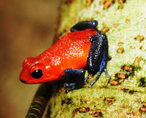

Habitad

La rana flecha roja y azul (Oophaga pumilio, designada anteriormente como Dendrobates pumilio) es una especiede rana veneno de dardo, distribuida por la vertiente caribeña desde el este de Nicaragua, Costa Rica y hasta el oeste de Panamá (incluyendo algunas islas del archipiélago de Bocas del Toro).
Caracteristicas
su color tan caracteristico cuerpo rojo con las extremidades azules
- mide aproximadamente 4cm
- lgunos ejemplares pueden ser naranjas, verdes o completamente azules, lo que ocurre más frecuentemente en las poblaciones de Panamá.
- su cabeza que asemja con la punta deuna flecha
- es una rana venenosa
menú